Pumpkin Patch Ice Cream Cake with Chocolate Ganache Marbling

~ raw, vegan, gluten-free ~
This ice cream cake turned out perfect. It goes together really easily and doesn’t require an ice cream machine. Not that an ice cream machine is complicated, just not everyone has one. :)
Though this is an ice cream cake, I did a timed test to see how long it can stand up to 70 degrees (F) room air. It did great for 60 minutes, after that it started to soften.
As the recipe name indicates… this is a “cake,” an ice cream cake. You can either enjoy it in cake form, or you can place it in the ice cream machine and enjoy it that way. Just skip the crust. Actually, you could still make the crust and crumble it on top of the ice cream when serving. Same with the ganache, it too is perfect as an ice cream topping.
The nice thing, well one of the nice things about this dessert is that you can make it weeks in advance and keep it stored in the freezer. This will take some of that big meal preparation stress off your shoulders. :)
I believe in using ingredients in their purest form, but I am going to share some alternatives to a few of the ingredients just in case you have trouble finding them in a raw version. Pumpkin puree and coconut milk, I have provided links below on how to make the raw versions but if you choose to use canned versions, always aim for organic and those found in BPA-free cans.
If you use canned pumpkin puree, use the plain puree with no other ingredients added. We are using pumpkin spice in the recipe which will “spice” it up. As far as the coconut milk goes, purchase the full-fat version, it is nice and creamy… perfect for this recipe.
Either way, do your best with what you have available. We are all on a journey towards eating healthier… so I support you where you are. Blessings!
Yields 7″ Springform pan
Crust:
- 1 cup raw pecans, soaked & dehydrated
- 1 cup Medjool dates, pitted
- 1 tsp ground cinnamon
- 1/4 tsp sea salt
Filling: 5 cups
Chocolate Ganache:
Preparation:
Crust:
- If the dates are tough and dry, cover them with enough warm water to hydrate for about 15 minutes. Once you are ready to add them to the recipe, drain and discard the soak water. Then hand-squeeze out the excess water.
- Place the pecans, cinnamon, and salt in a food processor, fitted with an “S” blade. The process to a small mealy texture. Don’t over-process.
- Add the dates and process until the crust batter sticks together when pinched.
- To prepare the Springform pan, line the base with wax/parchment paper for ease of removal.
- Press the crust batter into the pan and set aside while you make the ice cream cake part.
Filling:
- In the blender, combine the pumpkin puree, coconut milk, almond butter, maple syrup, kelp paste, and pumpkin spice. Blend until creamy.
- Chill while you make the ganache.
- To assemble; I poured the filling into the pan in 3 layers. In between each layer, I drizzled the ganache on top of the filling and swirled it with a wooden skewer stick. See the photos below.
- Once done, place in the freezer for 4+ hours until it is frozen.
- When ready to serve, remove from the freezer and let it sit on the counter for 15 minutes.
- Store leftovers in the freezer for up to 1 month. Enjoy!
Freezing Suggestions for Ice Cream:
-
Use an ice cream machine. Follow the manufactures directions.
-
Freeze in popsicle molds or 3 oz Dixie cups with a popsicle stick inserted.
-
-
Store the ice cream in the very back of the freezer, as far away from the door as possible. Every time you open your freezer door you let in warm air. Keeping ice cream way in the back and storing it beneath other frozen-sold items will help protect it from those steamy incursions.
-
Ice cream is full of fat, and even when frozen, fat has a way of soaking up flavors from the air around it—including those in your freezer. To keep your ice cream from taking on the odors, use a container with a tight-fitting lid. For extra security, place a layer of plastic wrap between your ice cream and the lid.
-
To soften in the refrigerator, transfer ice cream from the freezer to the refrigerator 20-30 minutes before using. Or let it stand at room temperature for 10-15 minutes.
-
Wish to make your own raw ice cream, wonder what machine I might recommend, and more? Click (
here) to check out the Reference Library!
Create a layer of filling on top of the crust.
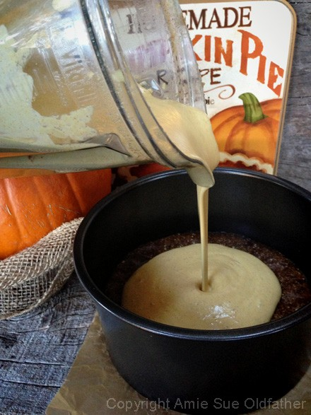
Tap the cake on the counter to bring any bubbles to the surface.
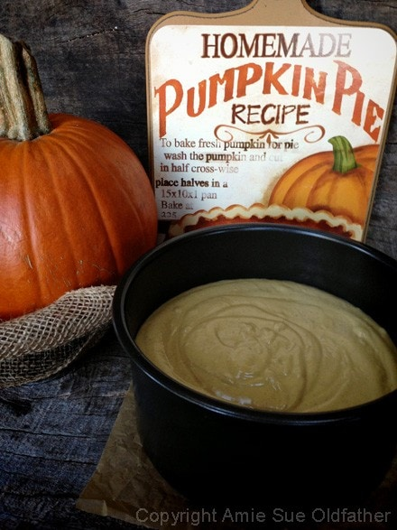
Drizzle the ganache in a random pattern.
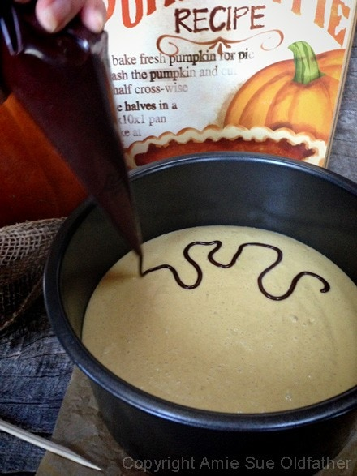
Don’t worry about making it look pretty at this point…
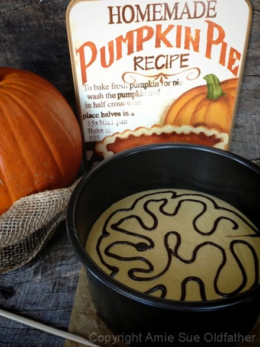
With a pointed tip, drag it around the ganache creating a swirl pattern.
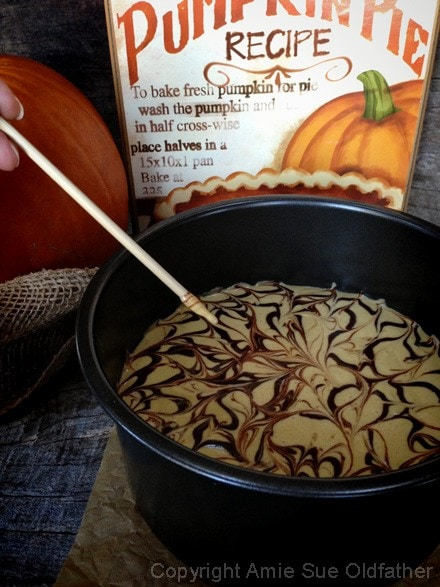
Pour another layer of filling over that.
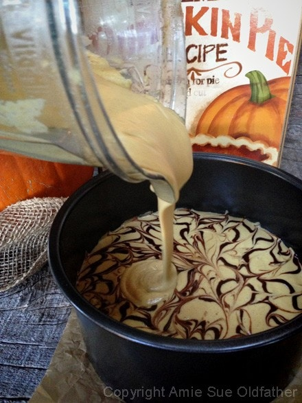
Tap once again on the counter to bring up those bubbles. Be gentle.
Let’s drizzle some more ganache. :)
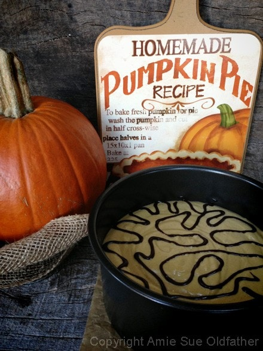
Swirl once again and be sure to keep the stick on the surface, so you don’t over-swirl the bottom layer.
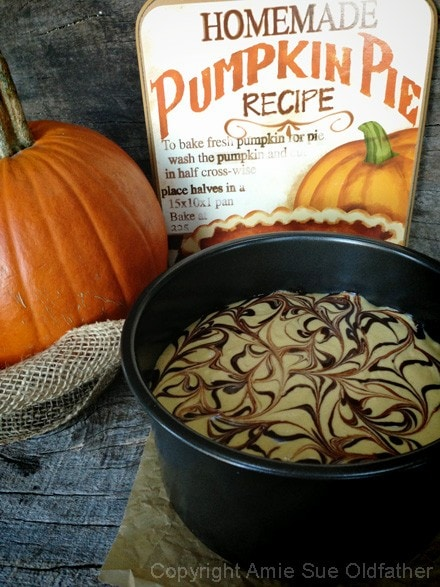
For kicks and grins, let’s repeat this process one last time. :) Pour the remaining filling on top.
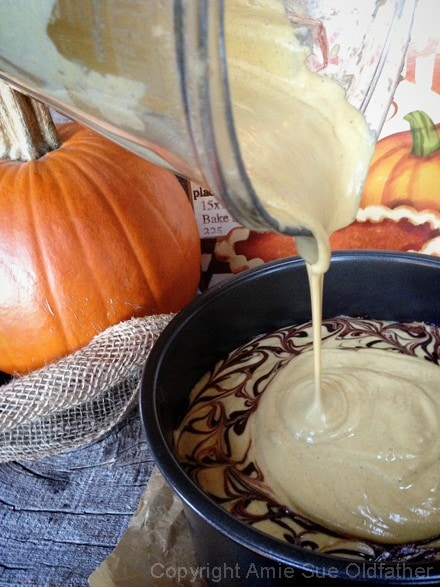
I thought I would swirl in a little love. :)
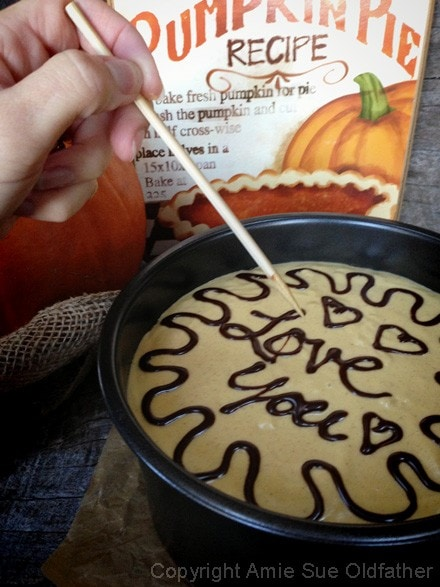
One last swirl, I promise.
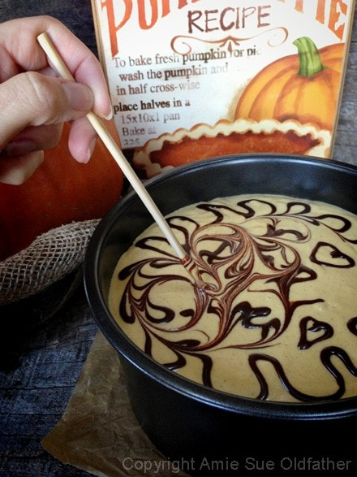
Place in the freezer for 4+ hours.
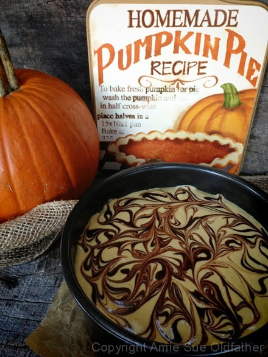
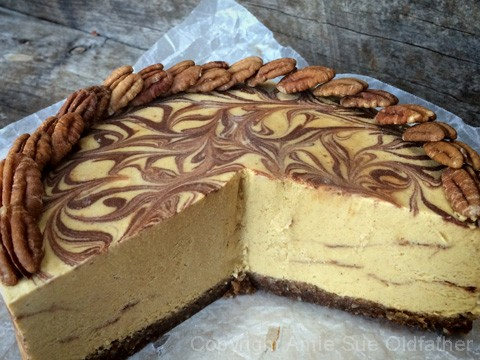
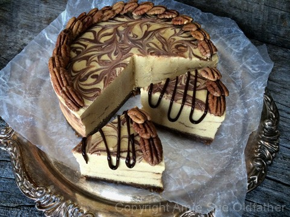
© AmieSue.com